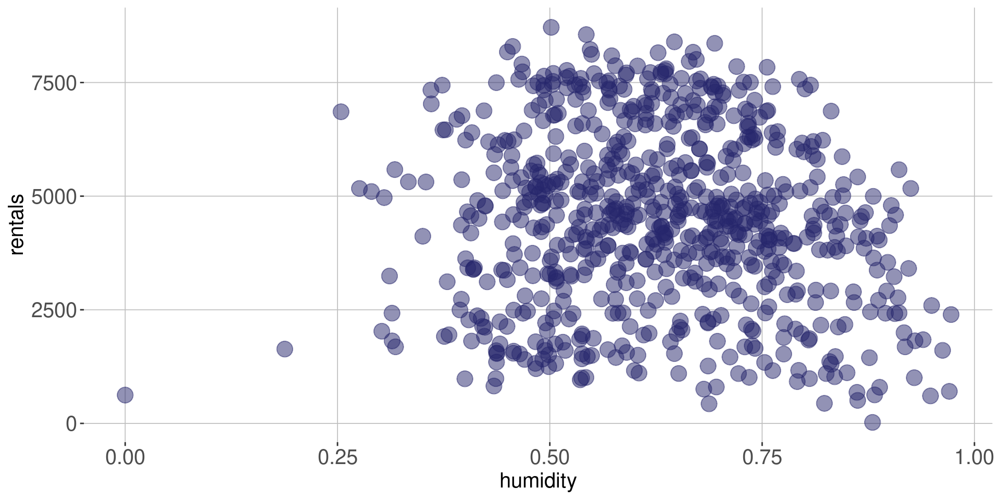
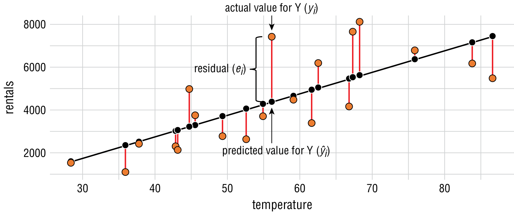
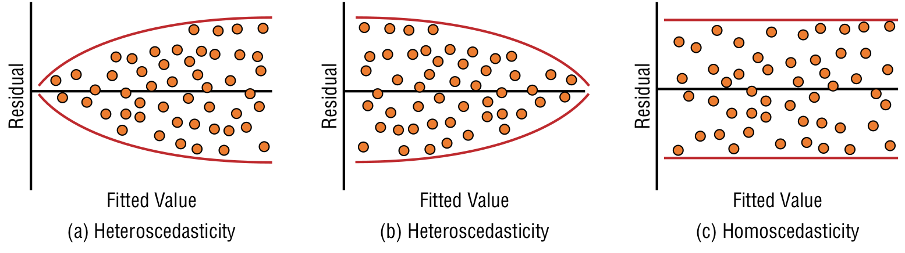

Regressão Linear
ESTAT0016 – Tópicos Especiais em Estatística (Introdução à Apredizagem de Máquina)
Prof. Dr. Sadraque E.F. Lucena
O que é Regressão Linear?
- A regressão linear é uma poderosa técnica estatística que nos permite explorar e modelar a relação entre variáveis.
- Ela é frequentemente utilizada para entender como uma variável dependente (a resposta) é afetada por uma ou mais variáveis independentes (os preditores).
Objetivos da Regressão Linear
-
Predição: Prever o valor da variável dependente com base nos valores das variáveis independentes. -
Análise de Relacionamentos: Compreender a natureza e força das relações entre variáveis. -
Controle de Variáveis: Isolar e controlar o efeito de variáveis específicas sobre a variável dependente.
Correlação
Inicialmente precisamos entender os dados e como cada variável se relaciona com as outras.
Deve-se fazer uma inspeção visual e calcular a correlação entre as variáveis do conjunto de dados.
-
O
coeficiente de correlação de Pearson( \(\rho\) ) é o mais usado para avaliar correlações lineares entre duas variáveis \(x\) e \(y\). Ele é dado por \[ \rho_{x,y} = \frac{Cov(x,y)}{\sigma_x \sigma_y}, \] onde- \(Cov(x,y)\) é a covariância de \(x\) e \(y\)
- \(\sigma_x\) e \(\sigma_y\) são, respectivamente, o desvio-padrão de \(x\) e de \(y\).
Correlação
-
\(-1\leq \rho \leq 1\):
- \(\rho = -1\): relação direta perfeita
- \(\rho = 1\): relação inversa perfeita
- \(\rho = 0\): não há relação
-
Vamos admitir que:
- Valores absolutos entre \(0\) e \(0.3\): relação fraca ou inexistente
- Valroes absolutos acima de \(0.3\) até \(0.5\): relação moderada
- Valores absolutos acima de \(0.5\): relação forte
Correlação
Temperatura vs. número de aluguéis
- Forte correlação até 70oF (21,1oC) e correlação moderada negativa após 70oF.
Correlação
Umidade vs. número de aluguéis

- Não parece haver correlação
Correlação
Velocidade do vento vs. número de aluguéis
- Não parece haver correlação
Correlação
- Inspeção visual não nos permite quantificar a força das relações.
- Então podemos usar o coeficiente de correlação de Pearson.
- A função
cor.test()calcula as correlações. Elas são significativas se p-valor \(< 0,\!05\).
Regressão
Um modelo de regressão envolve os componentes:
Variável resposta(\(Y\)): variável numérica que representa o valor ou os valores que desejamos prever.Preditores(\(X\)): variaǘeis que podemos usar para predizer os valores da variável resposta.Coeficientes(\(\beta\)): valores a serem estimados no modelo de regressão.
De forma geral, a relação entre esses componentes é dada por \[ Y \approx f(X,\beta). \]
Regressão Linear Simples
-
A regressão linear simples assume uma relação linear entre a variável preditora \(X\) e a variável resposta \(Y\) da seguinte forma \[ Y \approx f(X,\beta) \approx \beta_0 + \beta_i X \] ou \[ Y = \beta_0 + \beta_i X + \varepsilon \]
- em que \(\varepsilon\) é o componente de erro.
No caso do problema de aluguel de bicicletas, podemos ter \[ rentals = \beta_0 + \beta_1 \times temperature + \varepsilon \]
Regressão Linear Simples
O modelo de regressão linear simples também pode ser escrito da seguinte forma: \[ y_i = \beta_0 + \beta_1 x_i + \varepsilon_i \qquad(1)\] com \(i = 1,\ldots,n\).
Em que
- \(y_i\) é o valor da variável resposta \(Y\) para a instância \(i\);
- \(x_i\) é o valor da variável preditora \(X\) para a instância \(i\);
- \(\varepsilon_i\) é a componente de erro aleatório associado à instância \(i\).
Regressão Linear Simples
O objetivo de um modelo de regressão é estimar os valores dos coeficientes \(\beta_0\) e \(\beta_1\) de forma a obter o modelo: \[ \widehat{y}_i = \widehat{\beta}_0 + \widehat{\beta}_1 x_i \] em que
\(\widehat{y}_i\) é a predição de \(Y\) baseado no valor de \(x_i\);
\(\widehat{\beta}_0\) e \(\widehat{\beta}_1\) são as respectivas estimativas de \(\beta_0\) e \(\beta_1\).
\(\widehat{\beta}_0\) e \(\widehat{\beta}_1\) podem ser obtidos pelo método dos mínimos quadrados ordinários.
Método dos Mínimos Quadrados Ordinários
- Este método consiste em determinar os valores \(\widehat{\beta}_0\) e \(\widehat{\beta}_1\) que minimizam a soma dos quadrados dos resíduos do modelo.

Método dos Mínimos Quadrados Ordinários
Considere o resíduo \(e_i\), dado por \[ e_i = y_i - \widehat{y}_i \]
A soma do quadrado dos resíduos é dada por \[ \sum\limits_{i=1}^n e_i^2 = \sum\limits_{i=1}^n \left(y_i - \widehat{y}_i\right)^2 = \sum\limits_{i=1}^n \left(y_i - \widehat{\beta}_0 + \widehat{\beta}_1 x_i \right)^2 \]
Para obterms o mínimo da equação acima, derivamos com relação a \(\widehat{\beta}_0\) e \(\widehat{\beta}_1\) e igualamos a zero.
Método dos Mínimos Quadrados Ordinários
Para \(\widehat{\beta}_1\), o valor que minimiza a soma dos quadrados dos resíduos é \[ \widehat{\beta}_1 = \frac{\sum\limits_{i=1}^n \left( x_i - \overline{x} \right) \left( y_i - \overline{y} \right) }{\sum\limits_{i=1}^n \left( x_i - \overline{x} \right)^2} \]
\(\overline{x}\) e \(\overline{y}\) representam as médias de \(x\) e de \(y\), respectivamente.
Se dividirmos o numerador e o denominador por \((n-1)\), temos que \[ \widehat{\beta}_1 = \frac{Cov(x,y)}{Var(x)} \]
Método dos Mínimos Quadrados Ordinários
- O valor de \(\widehat{\beta}_0\) fica dado por \[ \widehat{\beta}_0 = \overline{y} - \widehat{\beta}_1 \overline{x} \]
- No
Ras estimativas de \(\widehat{\beta}_0\) e \(\widehat{\beta}_1\) são obtidas com a funçãolm().
Regressão Linear Múltipla
Aqui vamos criar um modelo com várias variáveis preditoras.
-
A equação do modelo é \[ y_i = \beta_0 + \beta_1 x_{i1} + \beta_2 x_{i2} + \cdots + \beta_p x_{ip} + \varepsilon_i \]
- \(i=1,\ldots,n\) indica a intância \(i\);
- \(x_{i1}\) é o primeiro preditor e \(x_{ip}\) o \(p\)-ésimo preditor.
Se quiséssemos avaliar \(rentals\) em função de \(humidity\), \(windspeed\) e \(temperature\), o modelo seria \[ rentals = \beta_0 + \beta_1 humidity + \beta_2 windspeed + \beta_3 temperature + \varepsilon \]
O modelo também é estimado usando a função
lm().
Regressão Linear Múltipla
Avaliação do ajuste do modelo
Para valiar o modelo de regressão linear múltiplo usamos:
-
Teste F:
- Testa a significâncaia geral do modelo.
- Ela compara o modelo ajustado com um modelo sem variáveis explicativas.
- Se p-valor \(< 0,\!05\), pelo menos uma variável explicativa no modelo tem um efeito significativo na variável de resposta e o modelo pode ser usado.
Regressão Linear Múltipla
Avaliação do ajuste do modelo
Para valiar o modelo de regressão linear múltiplo usamos:
-
Teste t:
- Avalia a significância de cada variável explicativa no modelo.
- Se p-valor \(< 0,\!05\), a variável explicativa é significativa e deve ser mantida no modelo.
- Se uma ou mais variáveis tiverem p-valores acima de \(0,\!05\), remova a variável com o maior p-valor, refaça o modelo. Continue esse processo, removendo uma variável de cada vez, até que todas as variáveis tenham p-valores abaixo de \(0,\!05\).
Regressão Linear Múltipla
Avaliação do ajuste do modelo
Para valiar o modelo de regressão linear múltiplo usamos:
-
Erro padrão residual:
- O resíduo \(e_i = y_i - \widehat{y}_i\) é a diferença entre o valore observado e o valor predito pelo modelo.
- O erro padrão residual é uma medida de dispersão desses resíduos.
- Ele é útil para comparar modelos. Quanto menor, melhor.
Regressão Linear Múltipla
Avaliação do ajuste do modelo
Para valiar o modelo de regressão linear múltiplo usamos:
-
Coeficiente de deterinação (\(R^2\)):
- O \(R^2\) representa a proporção da variabilidade da variável resposta que é explicada pelo modelo.
- É uma medida da qualidade do ajuste.
- Quanto mais próximo de 1, melhor.
Regressão Linear Múltipla
Avaliação do ajuste do modelo
Para valiar o modelo de regressão linear múltiplo usamos:
-
Coeficiente de deterinação ajustado (\(R^2\) ajustado):
- O \(R^2\) ajustado leva em consideração o número de variáveis explicativas usadas no modelo.
- Ess ponderação permite comparar o ajuste de modelos com números de variáveis explicativas diferentes.
Regressão Linear Múltipla
Análise dos Resíduos
Além das medidas de ajuste anteriores servem para avalair um modelo e compará-lo com outros.
No entanto, os modelos de regressão linear têm algumas suposições sore os resíduos que precisam ser satisfeitas para que o modelo seja válido.
-
As suposições são:
- Os resíduos têm média zero;
- Os resíduos têm distribuição normal;
- Os resíduos são homoscedásticos (a variância é constante para todos os valores da variável dependente);
- Os resíduos não são correlacionados.
Regressão Linear Múltipla
Análise dos Resíduos
1. Média Zero dos Resíduos
- Após ajustar o modelo é preciso verificar se a média dos resíduos é 0.
2. Normalidade dos Resíduos
- A normalidade dos resíduos pode ser investigada por inspeção visual usando um histograma. Esta é a forma mais confiável.
- Ela também pode ser testada usando os testes de Kolmogorov-Smirnov, Shapiro-Wilk, Cramer-von Mises, e Anderson-Darling. Há normalidade se p-valor \(>0,\!05\).
Regressão Linear Múltipla
Análise dos Resíduos
3. Homoscedasticidade dos Resíduos
- A homoscedasticidade ocorre quando a variância dos resíduos do modelo é constante ao longo da variável depdendente.
- Quando a variância não é constante, dizemos que há heteroscedasticidade e não podemos confiar que o modelo é correto.
- A homoscedasticidade pode ser avaliada graficamente (os pontos não devem apresentar um padrão).
- Outra forma de avaliar é usando o teste de Breusch-Pagan. O resíduos são homoscedásticos se p-valor \(> 0,05\).
Regressão Linear Múltipla
Análise dos Resíduos
3. Homoscedasticidade dos Resíduos

Regressão Linear Múltipla
Análise dos Resíduos
3. Homoscedasticidade dos Resíduos
- Quando há heteroscedasaticidade pode-se usar uma regressão ponderada, onde cada ponto de dados recebe um peso com base na variância de seu valor ajustado.
- Outra abordagem é aplicar uma função côncava, como uma transformação logarítmica, à variável dependente para normalizar seus valores.
- O desafio com essa abordagem é que torna mais difícil interpretar os resultados do modelo, uma vez que as unidades do modelo não são mais as mesmas que as dos dados originais.
Regressão Linear Múltipla
Análise dos Resíduos
4. Autocorrelação dos Resíduos
No modelo de regresão queremos que os resíduos não sejam correlacionados.
Se os resíduos do modelo mostrarem autocorrelação, isso significa que o ruído no modelo não é puramente aleatório e há mais informações que precisamos extrair dos dados para aprimorar o modelo.
-
O teste mais popular para autocorrelação dos resíduos é o teste de Durbin-Watson (DW).
- Se o p-valor \(> 0,05\) os resíduos não são correlacionados.
- A estatística do teste DW varia de 0 a 4, com valores entre 0 e 2 indicando autocorrelação positiva, 2 indicando autocorrelação zero e valores entre 2 e 4 indicando autocorrelação negativa.
Regressão Linear Múltipla
Análise dos Resíduos
4. Autocorrelação dos Resíduos
- Quando há correlação nos resíduos, pode-se tentar incluir novas variáveis explicativas no modelo.
- Se essa abordagem não reduzir a autocorrelação residual, será necessário considerar transformações em algumas variáveis preditoras.
Regressão Linear Múltipla
Pontos Influentes
A presença de valores extremos nas variáveis explicativas pode prejudicar a precisão e generalização de modelos de regressão linear.
Essas observações, conhecidas como pontos influentes, têm um impacto significativo no modelo, tornando-o sensível a variações.
-
Pontos influentes devem ser investigados e eles são encontrados usando a Distância de Cook.
-
Uma observação é sinalizada para investigação se sua distância de Cook for maior que \(4 / (n - k - 1)\), onde
- \(n\) é o número de observações no conjunto de dados e
- \(k\) é o número de variáveis no modelo.
-
Regressão Linear Múltipla
Pontos Influentes
- Os pontos influentes devem ser investigados.
- Se as médias e medianas não se alteram muito com a remoção desses pontos do conjunto de dados, eles podem ser removidos.
- Note que a remoção de pontos pode implicar na perda de um padrão pequeno, mas importante.
Regressão Linear Múltipla
Multicolinearidade
- Multicolinearidade ocorre quando duas ou mais variáveis explicativas são altamente correlacionadas entre si.
- Ela é um problema porque leva a erros padrão inflados e torna bastante difícil separar o impacto das variáveis exlicativas individuais na variável resposta.
- Podemos usar o coeficiente de correlação para avaliar as corelações duas a duas ou o fator de inflação da variância (variance inflation factor, VIF).
- Para a variável explicativa \(x_k\), VIF é dado por \[ VIF = \frac{1}{1-R^2_k} = \frac{1}{Tolerancia}. \]
Regressão Linear Múltipla
Multicolinearidade
Em geral, há multicolinearidade se os valor de VIF é maior que 5 e a tolerância é menor que 0,2.
Quando houver duas variáveis explicativas com corelação alta, devemos remover uma delas ou combiná-las em uma única variável.
Aprimorando o Modelo
-
Uma vez que conseguimos avaiar um modelo, podemos melhorá-lo de algumas formas:
- Acrescentar no modelo variáveis explicativas elevadas ao quadro ou ao cubo (regressão polinomial).
- Incluir variáveis categóricas.
- Considerar interação entre variáveis.
- Selecionar as variáveis do modelo usando uama abordagem de seleção forward, backward ou uma combinação das duas (mixed).
- Considerar outros tipos de modelos de regressão: MLG, GAMLSS, regresão beta, etc.
Ponto fortes da regressão linear
- A rgressão linear é fácil de entender e pode ser aplicada a qualquer conjunto de preditores para gerar uma resposta com cálculos mínimos.
- A regressão linear fornece uma estimativa do tamanho e da intensidade da relação entre duas ou mais variáveis.
- Os modelos de regressão linear são fáceis de construir e entender, pois os princípios estatísticos subjacentes são bem definidos e têm ampla aplicabilidade
Ponto fracos da regressão linear
- A regressão linear faz algumas suposições sobre a relação entre as variáveis independentes e dependentes. A suposição mais notável é que essa relação é linear. No entanto, isso nem sempre é verdade para dados do mundo real.
- Valores atípicos representam um problema significativo para modelos de regressão linear.
- Modelos de regressão linear representam a relação numérica entre preditores e a resposta. Isso pressupõe implicitamente que as variáveis são contínuas. Para lidar com um preditor categórico, o modelo precisa criar variáveis dummy como uma representação da variável categórica.
- Compreender as saídas do modelo de regressão linear requer algum conhecimento estatístico básico.
- A regressão linear exige que especifiquemos a forma do modelo antes de iniciar o processo de modelagem.
Resumo
Primeiro precisamos avaliar a correlação entre as variáveis explicativas (regressores). Se duas ou mais tiverem alta correlação, incluímos apenas uma.
-
Após ajustado o modelo:
- Teste F: Se p-valor \(< 0.05\) pelo menos um dos regressores é importante para o modelo.
- Teste t: deve-se remover as variáveis com p-valor \(>0.05\).
- \(R^2\): quantifica a proporção de variabilidade da variável resposta explicada pelo modelo.
- \(R^2\) ajustado: serve para comparar modelos
Resumo
-
Suposições do modelo:
- Resíduos têm média zero
- Resíduos têm distribuição normal: faça um qqplot para verificar
- Resíduos homoscedásticos (variância constante): faça um gráfico dos resíduos vs. valores ajustados (fitted values) e um teste de Breush-Pagan (homoscedástico se p-valor \(> 0.05\))
- Autocorrelação dos resíduos: test de Durbin-Waton (há autocorrelação se se p-valor \(< 0.05\))
Resumo
- Identificação de pontos influentes: gráfico da distância de Cook. Se a retirada dos pontos muda muito as estimativas do modelo, os pontos não devem ser retirados.
- Multicolinearidade das variáveis regressoras: ocorre se VIF > 5 e tolerance < 0.2. Nesse caso retira-se a variável.
Agora vamos ajustar um modelo no R